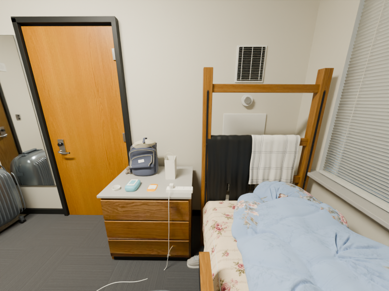
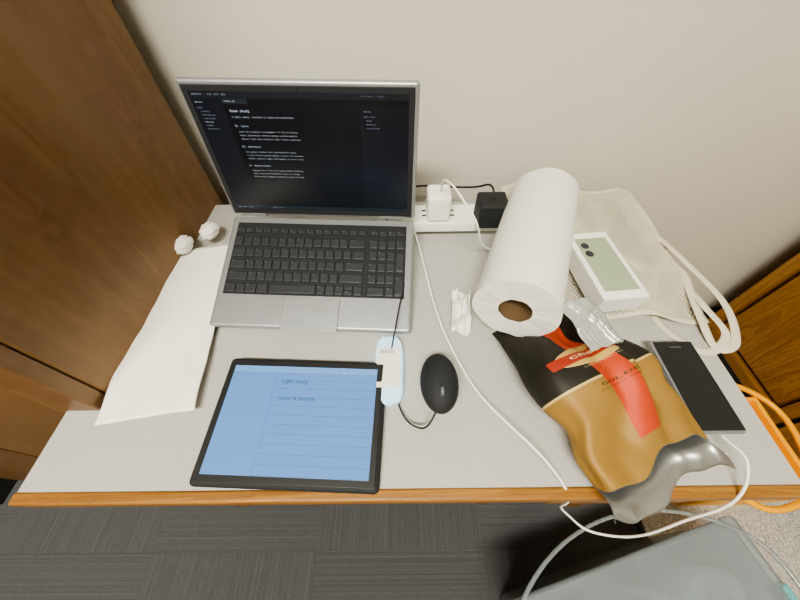
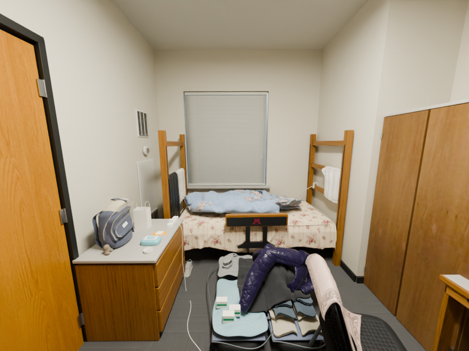
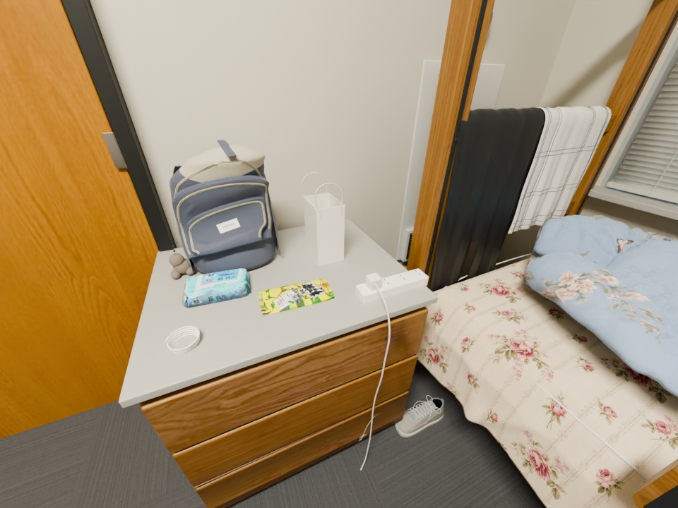

ROOM REPLICA / ARCHIVE · 2026.09.08
留存已有成果，
项目在此结束。
从 16 张房间照片出发，完成可编辑的 Blender 场景、交互演示，以及多轮布局、材质与生活物件改进。以下都是已经完成的实际 Cycles 渲染。
项目按用户要求结束，不再自动迭代。当前效果尚未达到“与实景难辨”。床品、衣物堆叠、背包与局部光照仍有明显差距。
r10 是最后完成整场景构建与渲染审查的冻结版本，Release 提供原生工程及精确源码快照。首页保留 v1 实时模型；后续局部改进分别标注，未混称同一个最终版本。







